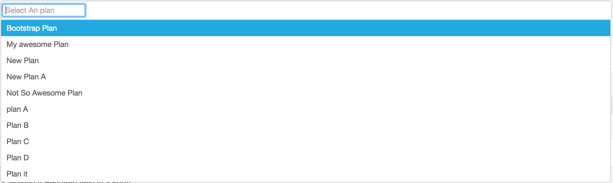

Multi-Select Typeahead
A complete Angular.js directive for Multi-select autocomplete


Getting started
Grab the sources with npm or download from Github: [https://github.com/CINBCUniversal/Multi-Select-Typeahead]:
Install "multi-select-autocomplete" npm and save it in your package.json or bower.json. For Example :
$ npm install --save git+https://github.com/CINBCUniversal/Multi-Select-Typeahead.gitAfter installation include its
@import node_modules/multi-select-autocomplete/dist/multiple-select.scss
multiple-select.min.css AND
multiple-select.min.js
<script src="node_modules/multi-select-autocomplete/dist/multiple-select.min.js"></script>
<link href="node_modules/multi-select-autocomplete/dist/multiple-select.min.css" rel="stylesheet">in your html. Then,
Include multiSelectAutocomplete module in your app:
For example :
angular.module('app', [
'multiSelectAutocomplete'
]);Now angularMultipleSelect module is injected in your module. You are ready to use it.
You can use it in 2 ways in your form : 1. If your options list is an array of objects, like :
vm.planList = [
{id: 1, name : "plan A"},
{id: 2, name : "Plan B"},
{id: 3, name : "Plan C"},
{id: 4, name : "Plan D"},
{id: 5, name : "My awesome Plan"},
{id: 6, name : "Not So Awesome Plan"},
{id: 7, name : "Plan it"},
{id: 8, name : "New Plan"},
{id: 9, name : "New Plan A"},
{id: 10, name : "Bootstrap Plan"}
];<multi-autocomplete ng-model="vm.selectedList"
object-property="'name'"
suggestions-arr="vm.planList">
</multi-autocomplete>Here, in "suggestions-arr" you have to provide the options list from which user can select multiple value. and, "object-property" is which you want to show to user. In above example "name" is the property which i want to show.
"ng-model" will give you an array of selected things. For Ex : If user selects plan A & plan B, then
ng-model will have
vm.selectedList = [
{id: 1, name : "plan A"},
{id: 2, name : "Plan B"}
];- If your options list is an array of strings, like :
vm.planList = [
"plan A",
"Plan B",
"Plan C",
"Plan D",
"My awesome Plan",
"Not So Awesome Plan",
"Plan it",
"New Plan",
"New Plan A",
"Bootstrap Plan"
];<multi-autocomplete ng-model="vm.selectedList"
suggestions-arr="vm.planList">
</multi-autocomplete>Here, in "suggestions-arr" you have to provide the options list from which user can select multiple value.
"ng-model" will give you an array of selected things. For Ex : If user selects Plan A & Plan B, then
ng-model will have
selectedList = [
"Plan A",
"Plan B"
]- To make it required Field in a form for errors
<form name="multipleSelectForm" novalidate>
<div ng-class="{'has-error' : multipleSelectForm.multipleSelect.$invalid && multipleSelectForm.multipleSelect.$dirty, 'has-success' : !multipleSelectForm.multipleSelect.$invalid && multipleSelectForm.multipleSelect.$dirty}">
<label>should not be able to submit if the selected is not selected</label>
<multi-autocomplete ng-model="vm.selected" name="multipleSelect" required="true"
suggestions-arr="vm.planList">
</multi-autocomplete>
<span ng-show="multipleSelectForm.multipleSelect.$invalid && multipleSelectForm.multipleSelect.$dirty" class="ng-hide">
<p class="error-msg" ng-show="multipleSelectForm.multipleSelect.$error.required">Please select something from multiple select field</p>
</span>
</div>
<br/>
<button type="button" class="btn btn-default" ng-click="vm.onSubmit()">Submit Form</button>
</form>- Fetching options list from 3rd party api/url Part 1. If your Api return an array of strings like :
[
"plan A",
"Plan B",
"Plan C",
"Plan D"
];Then in html there is no need to specify property in "object-property" attribute in directive
<multi-autocomplete ng-model="skillsFromApi"
api-url="{{apiPath}}">
</multi-autocomplete>Part 2. If your Api return an array of objects like :
[
{id: 1, name : "plan A"},
{id: 2, name : "Plan B"},
{id: 3, name : "Plan C"},
{id: 4, name : "Plan D"}
]Then in html you need to specify property in "object-property" attribute in directive
in this case, you have to do like this :
<multi-autocomplete ng-model="skillsFromApi"
object-property="'name'"
api-url="{{apiPath}}">
</multi-autocomplete>multi-autocomplete Options
| Param | Type | Required | Detail | Defaults |
|---|---|---|---|---|
| model-arr | String | required | ng-model for the input/autocomplete | NA |
| suggestion-arr | Array | required | Array of options for multi-select | NA |
| disable | Boolean | optional | Boolean to programaticly enable/disable mult-select | false |
| placeholder | String | optional | placeholder for the input | NA |
| api-url | string | optional | url endpoint to get suggestions-arr | NA |
| object-property | string | required* | property name to foucs on if suggestionArr is array of objects. | NA |
| multiple | number | optional | the number of options the user can select | suggestionArr.length |
| clear-all | Boolean | optional | clear all selected options | false |
| close-on-select | Boolean | optional | close dropdown when the user selects the options | true |
| sort-by | String/Boolean | optional | property to sort by if the suggestionArr is array of objects, Boolean if the suggestionArr is array of strings | NA |
Run spec/tests
To run spec;
cd node_modules/multi-select-autocomplete
npm test
to run examples
clone this repo
npm install
gulp serve
should serve on http://localhost:5000